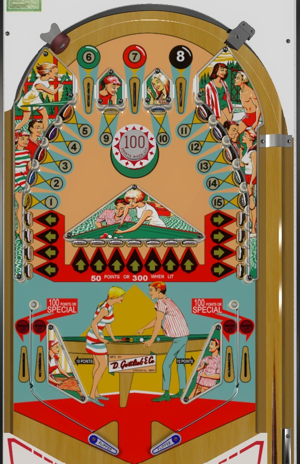

Target Pool is the replay version. Mini Pool and Bumper Pool are add-a-ball versions. This guide primarily focuses on Target Pool, with differences observed in the add-a-ball versions mentioned at the end of the guide.
Not to be confused with other billiards themed games from Gottlieb, such as Flipper Pool (1965) or Pinball Pool (1979).
Hit 1-15 targets to light arrow targets for 300 points each. Focus especially on collecting 6-7-8 from the top lanes to light the bumper for 100 points. Any controlled shot should be directed to the top of the playfield, as all 7 of the horizontal arrow targets pose a high drain risk. If playing strictly for points, try to leave one number other than 6, 7, or 8 behind, as completing 1-15 will change the bottom lane award to special, which is worth no points.
All progress in this game (1 through 15 numbers and lit arrow targets) carries over from ball to ball. There is no end of ball bonus.
Score 10 points each, whether lit or not. Completing 6-7-8 lights the bumper for 100 points, which can boost scoring quite a lot.
Figure out how to plunge all 3 of these lanes, and try to always be making progress on them at the beginning of the first three balls. It's difficult, though not impossible, to collect these lanes after the plunge- a lucky bumper hit may knock the ball into the 7, or a particularly fast flipper shot may deflect the ball off one of the sets of 4 arrow targets and into the corresponding 6 or 8 lane.
Always award 10 points, whether lit or unlit. Collecting more of these numbers makes it possible for more arrow targets to be lit.
Completing all odd numbers lights the left out lane for special; completing all even numbers lights the right out lane for special; finishing 1-15 lights all in and out lanes for special.
In competition play, it's actually bad in the long run to complete all of 1-15. The 100 points scored on an unlit in lane is actually decent value, but completing 1-15 lights both in lanes for special, which is worth no points in competition play, and the special stays on/can be hit repeatedly. 5 and 11 are typically the hardest targets to hit in my experience; to truly maximize scoring efficiency, leave one of them (or any other pool ball that's not on the top lanes) behind.
There are 15 of these as well; 4 on either side and 7 in the middle. These targets score 50 points when not lit or 300 points when lit. Which and how many arrow targets are lit at any given time seems to be somewhat random, but I believe it follows these rules:
There can be either 0, 1, or 2 lit targets. For the most part, though, lit targets can usually be ignored. If the ball is on a flipper and one of the four arrow targets on the opposite is lit, absolutely, go for that, but if not, it's usually safer to just take the shot up top anyway off a 50 points target and let the ball rattle around up there, especially if the 100 point bumper is lit. Shooting any of the 7 center arrow targets directly, but especially the two on the ends, poses a high drain risk.
As far as flipper transfers go, the alley pass is in play, the post transfer really isn't, and tap passing can be difficult on 2 inch EM flippers; but again, doing this to hit a 300 point target just seems like more trouble than it's worth instead of just shooting the ball back up top like normal.
All lanes score 100 when not lit, or special (and no points) when lit. Completing the odd numbers of 1-15 lights the left out lane, completing the even numbers of 1-15 lights the right out lane, and completing all of 1-15 lights all 4 lanes. As mentioned in the "1-5 and 9-15 standup targets" section, the more of these lanes are lit, the fewer 100s will be scored on a return or on the way out, so try to avoid collecting the last pool ball.
Note the position of the in lane/out lane post: it's basically directly above the mouth of the in lane, rather than centered over the in/out lane dividing rail. Keep this in mind when developing a nudging strategy as the ball approaches these areas.
All playfield scoring other than in/out lanes and slingshots is multiplied by 10. This does not change the game strategy.
The 7-ball can be spotted from either out lane; the 6 and 8 balls can now be spotted from the left and right in lanes respectively. This makes it easier to collect the top lanes pool balls, though there is still some emphasis on plunging the 7 since the center top lane is the only way to collect it without draining a ball.
There are only 10 pool balls to collect instead of 15; the five upper right standup targets that correspond to 11-12-13-14-15 on Target Pool are duplicates of 1-2-3-4-5 on Mini Pool and Bumper Pool.
Collecting all of 1-10 instantly scores an extra ball, and lights the in/out lanes to score additional extra balls for the remainder of the ball in play. If the ball drains when Wows are lit, all 10 pool balls reset for the next turn, and they must be collected again to make more extra balls available. Resetting pool balls also means that once Wows are unlit, increased scoring from the arrow targets will disappear as well until pool balls are recollected.
Multiple extra balls can be collected on a single ball in play. For Mini Pool, you can keep collecting extra balls until you have 10 balls remaining to play total; on Bumper Pool, you can have up to 5 extra balls built up for the current ball in play.